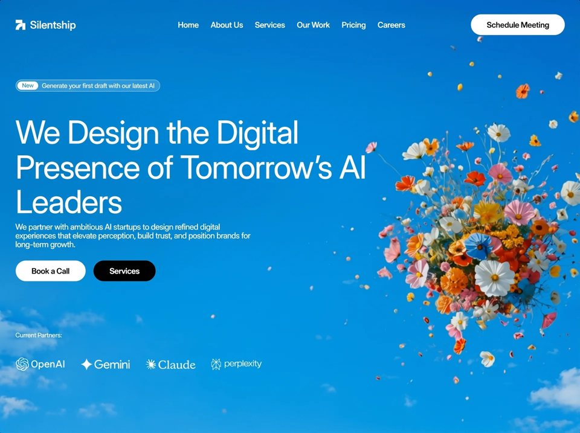

Skyflora
Creativecreativeyilai-ai 公开页面
收录时间：2026-08-28正文：13,215 字符

本地预览图 · jpeg
完整提示词
Build ONE standalone HTML file (index.html) that recreates this Silentship hero EXACTLY. No framework, no extra sections, no redesign, no guessed values. Output a complete <!DOCTYPE html> document with CSS in <style> and JS at the end of <body>.
GOAL
A self-contained marketing hero. The section occupies exactly 100dvh, overflow:hidden, never scrolls internally. The page may scroll so later sections can be appended. Scope component styles under .hero-section except global reset/tokens.
════════════════════════════════════════
ASSETS — USE THESE EXACT URLS (do not invent, swap, or omit)
════════════════════════════════════════
PORTRAIT video (FIRST <source>, with media):
https://d8j0ntlcm91z4.cloudfront.net/user_38xzZboKViGWJOttwIXH07lWA1P/hf_20260826_123600_09b00bd9-d15f-4f51-bc92-59c188a9038d.mp4
LANDSCAPE video (SECOND <source>, no media — default):
https://d8j0ntlcm91z4.cloudfront.net/user_38xzZboKViGWJOttwIXH07lWA1P/hf_20260826_123559_8bd76733-400a-4f35-a4c5-ee653cd0a975.mp4
Poster PNG:
https://d8j0ntlcm91z4.cloudfront.net/user_38xzZboKViGWJOttwIXH07lWA1P/hf_20260826_181503_79927e88-7fb7-484b-9dc0-df18d227d035.png
Partner logo PNGs (imgs, NOT SVG wordmarks), each width="1584" height="672" decoding="async":
OpenAI: https://d8j0ntlcm91z4.cloudfront.net/user_38xzZboKViGWJOttwIXH07lWA1P/hf_20260826_182155_ba605e38-ddae-4241-93fb-edee3bb1cb97.png
Gemini: https://d8j0ntlcm91z4.cloudfront.net/user_38xzZboKViGWJOttwIXH07lWA1P/hf_20260826_182248_f506655e-7de7-444f-be91-b604fe9cdae3.png
Claude: https://d8j0ntlcm91z4.cloudfront.net/user_38xzZboKViGWJOttwIXH07lWA1P/hf_20260826_182156_6986c276-91a8-48d5-8c17-c1e141462ad0.png
Perplexity: https://d8j0ntlcm91z4.cloudfront.net/user_38xzZboKViGWJOttwIXH07lWA1P/hf_20260826_182158_79eea5ad-07da-4a7c-bd86-830be8754ccd.png
VIDEO MARKUP (exact order):
<video autoplay muted loop playsinline poster="[POSTER PNG]">
<source media="(max-aspect-ratio: 1/1)" src="[PORTRAIT VIDEO]" type="video/mp4">
<source src="[LANDSCAPE VIDEO]" type="video/mp4">
</video>
The background video NEVER animates (no ken-burns). It is a static stage (autoplay loop only).
FONT
@font-face {
font-family: 'InterV';
src: url(assets/inter-variable.woff2) format('woff2'),
url('https://rsms.me/inter/font-files/InterVariable.woff2') format('woff2');
font-weight: 100 900;
font-style: normal;
font-display: block;
}
Stack: 'InterV', -apple-system, BlinkMacSystemFont, 'Segoe UI', Roboto, Helvetica, Arial, sans-serif
body: -webkit-font-smoothing:antialiased; -moz-osx-font-smoothing:grayscale; text-rendering:optimizeLegibility; font-optical-sizing:none; font-variation-settings:"opsz" 32;
Weights are real variable-axis positions (not fake bold):
--w-display:400 --w-body:400 --w-brand:535 --w-nav:515 --w-action:620 --w-chip:420 --w-caption:400
Sizes (reference px, multiplied by --u):
--t-display:64; --lh-display:70; --ls-display:-.02em;
--t-body:16; --lh-body:17.9; --ls-body:-.015em;
--t-brand:21.2; --ls-brand:-.004em;
--t-nav:15.75; --t-action:16; --t-chip:11.95; --t-badge:12.75; --t-plabel:12.6;
════════════════════════════════════════
DOCUMENT
════════════════════════════════════════
html lang=en
charset utf-8
viewport: width=device-width, initial-scale=1, viewport-fit=cover
title: Silentship — We Design the Digital Presence of Tomorrow’s AI Leaders
meta description: We partner with ambitious AI startups to design refined digital experiences that elevate perception, build trust, and position brands for long-term growth.
FIRST script in <head> before CSS: document.documentElement.classList.add("js-entrance")
body background #0b8ed2, color #fff, overflow-x:hidden
html { scroll-behavior:smooth }
a { color:inherit; text-decoration:none }
button { font:inherit; color:inherit; background:none; border:0; cursor:pointer }
════════════════════════════════════════
LAYOUT MACHINE — DO NOT SIMPLIFY
════════════════════════════════════════
Two artboards by ASPECT RATIO ONLY. No width media queries. Only @media (max-aspect-ratio: 1/1) for portrait.
Landscape reference: 1440 × 862
Portrait reference: 390 × 844
@property --u { syntax: "<length>"; inherits: true; initial-value: 1px; }
Every measured size is (N * var(--u)). Height uses 100dvh. --u is derived from svh so content still fits when mobile chrome expands.
LANDSCAPE .hero-section:
position:relative; height:100dvh; overflow:hidden; isolation:isolate;
font-size: min( max(calc(100vw / 14.4), calc(100svh / 8.62)), calc(100svh / 6.8), 175px );
--u: .01em;
PORTRAIT .hero-section:
font-size: min( calc(100vw / 3.9), calc((100vw + 780px) / 11.7), calc(100svh / 4.70) );
--u: .01em;
BACKGROUND
.hero-section__bg: absolute inset 0, z-index 0, background #0b8ed2
video: width/height 100%, object-fit:cover, object-position:50% 50%, display:block
PORTRAIT extra on video: object-position:50% 100%; transform:scale(1.26); transform-origin:50% 100%;
PORTRAIT overlay ::after:
linear-gradient(180deg, rgba(4,86,140,.26) 0%, rgba(4,86,140,0) 18%, rgba(4,86,140,0) 40%, rgba(5,90,145,.22) 62%, rgba(6,94,150,.34) 100%)
STAGE
.stage: absolute inset 0, z-index 1, flex column
Landscape padding: 30.96u 32u 114.82u
Portrait padding: 22u 20u 26u
Spacers (flex items cannot overlap):
.sp, .vsp { flex-basis:0; min-width:12u }
.sp-a { flex-grow:1.5563 }
.sp-b { flex-grow:1 }
.vsp { min-width:0; min-height:16u }
.vsp-a { flex-grow:2.4467 }
.vsp-b { flex-grow:1 }
Portrait: hide .sp; .vsp min-height 10u; vsp-a grow 3; vsp-b grow 1
DOM order inside .stage:
1. header.head
2. span.vsp.vsp-a
3. section.hero
4. span.vsp.vsp-b
5. footer.partners
════════════════════════════════════════
HEADER
════════════════════════════════════════
.head: flex, align center, height 41.76u, flex:none
.logo: flex, gap 9.46u, relative, top 0.28u
.mark SVG 20×20u, color #fff, viewBox 0 0 20 20:
path fill currentColor: M0 0h13.4v6.6H0z
path fill currentColor: M13.4 6.6H20V20h-6.6z
path fill none stroke currentColor stroke-width 6.6: M3.3 20A10.1 10.1 0 0 1 13.4 9.9
.brand: "Silentship" 21.2u / weight 535 / ls -.004em / nowrap / line-height 1
.nav id="nav": flex, gap 23.9u, 15.75u, weight 515, nowrap
Links href="#": Home | About Us | Services | Our Work | Pricing | Careers
nav a hover opacity .74, transition opacity .18s ease
.cta "Schedule Meeting" href="#"
width 189.72u, height 41.76u, radius 20.88u, bg #fff, color #000
16u, weight 620, ls -.024em, flex center
box-shadow 0 1px 2px rgba(3,58,92,.10)
hover: translateY(-1px), box-shadow 0 6px 18px rgba(3,58,92,.20)
transition transform/box-shadow .18s ease
.menu-btn display:none on landscape
Portrait header: height 40u, space-between; .logo top 0 gap 9u; .mark 22×22u
.nav hidden by default; when .open, column overlay:
absolute; left/right 20u; top 66u; padding 8u; radius 16u
bg rgba(255,255,255,.16); backdrop-filter blur(16px) saturate(120%)
box-shadow 0 12px 34px rgba(3,58,92,.22); z-index 5
1px cyan gradient border via ::before + mask xor/exclude (same technique as badge)
links padding 11u 12u, radius 10u
.cta display:none
.menu-btn shown: 40×40u circle, bg rgba(255,255,255,.18), blur 10px,
inset 0 0 0 1px rgba(150,240,255,.6)
hamburger SVG 17×12 viewBox 0 0 17 12, fill #fff:
M0 0h17v1.9H0z M0 5.05h17v1.9H0z M0 10.1h17V12H0z
id menuBtn, aria-label Open menu, aria-expanded false, aria-controls nav
════════════════════════════════════════
HERO COPY
════════════════════════════════════════
BADGE landscape: 291.06 × 23.94u, radius 11.97u
bg rgba(255,255,255,.18); backdrop-filter blur(10px) saturate(115%)
::before 1px gradient border:
linear-gradient(155deg, rgba(112,242,255,.98) 0%, rgba(104,234,255,.95) 42%, rgba(87,218,255,.88) 100%)
mask content-box xor / exclude
CHIP "New": absolute left 4.14u top 3.7u, 41.76×16.6u, radius 8.3u, bg #fff, color #1591d6, 11.95u weight 420, centered
TXT: "Generate your first draft with our latest AI"
absolute left 53.3u, full height, 12.75u weight 400, ls .001em, color rgba(255,255,255,.96), nowrap
Portrait badge: width auto, max-width 100%, height 28u, radius 14u, padding 0 12u 0 4u, gap 8u
chip static: auto width, height 20u, radius 10u, padding 0 9u, font 12u
txt static: 12.5u nowrap
H1 — exact three-line wrap via .ln / .ln-i (do not reflow on landscape):
Line1: We Design the Digital
Line2: Presence of Tomorrow’s AI
Line3: Leaders
Use Tomorrow’s
.ln { display:block; overflow:clip; overflow-clip-margin:6u }
.ln-i { display:block }
Landscape: margin-top 23.62u, width min(800u,100%), 64u / 70u, weight 400, ls -.02em
Portrait: width 344u, margin-top 18u, 34u / 36.7u, ls -.022em; hide h1 br; .ln and .ln-i display:inline overflow:visible
LEDE:
We partner with ambitious AI startups to design refined digital
experiences that elevate perception, build trust, and position brands for
long-term growth.
Landscape: margin-top 5.49u, width min(478u,100%), 16u / 17.9u, weight 400, ls -.015em
Portrait: width 350u, margin-top 14u, 15u / 21.75u, color rgba(255,255,255,.95)
ACTIONS
Landscape margin-top 23.27u, gap 16.2u
.btn height 41.76u, radius 20.88u, 16u weight 620, ls -.026em, nowrap
hover translateY(-1px)
.btn-light "Book a Call" width 140.94u, bg #fff color #000, shadow 0 1px 2px rgba(3,58,92,.10)
hover shadow 0 6px 18px rgba(3,58,92,.20)
.btn-dark "Services" width 124.74u, bg #000 color #fff, shadow 0 1px 2px rgba(0,0,0,.16)
hover shadow 0 6px 18px rgba(0,0,0,.26)
Portrait: margin-top 22u, gap 12u; buttons height 46u, radius 23u, 15.5u, padding 0 26u, width auto
════════════════════════════════════════
PARTNERS — PNG IMGS
════════════════════════════════════════
Label: "Current Partners:" 12.6u weight 400 ls .0005em color rgba(255,255,255,.86)
.plogos landscape: margin-top 16.91u, margin-left .45u, flex, align flex-start, color rgba(193,238,255,.9)
.pl { display:block; width:auto; opacity:.9 }
.pl.openai height 50.97u, margin-left -10.62u, margin-right 22.48u, margin-top -11.83u
.pl.gemini height 51.61u, margin-left -11.98u, margin-right 20.10u, margin-top -11.81u
.pl.claude height 49.80u, margin-left -8.45u, margin-right 23.31u, margin-top -11.40u
.pl.perplexity height 54.53u, margin-left -13.15u, margin-right -13.79u, margin-top -13.48u
Markup (no extra wrappers, four imgs in a row):
<img class="pl openai" src="[OpenAI PNG]" alt="OpenAI" width="1584" height="672" decoding="async">
<img class="pl gemini" src="[Gemini PNG]" alt="Gemini" width="1584" height="672" decoding="async">
<img class="pl claude" src="[Claude PNG]" alt="Claude" width="1584" height="672" decoding="async">
<img class="pl perplexity" src="[Perplexity PNG]" alt="perplexity" width="1584" height="672" decoding="async">
Portrait:
.plogos { margin-top:14u; margin-left:0; flex nowrap; align-items:center; gap:3u }
.pl { margin:0 !important }
.pl.openai { height:37.75u }
.pl.gemini { height:46.19u }
.pl.claude { height:47.66u }
.pl.perplexity { height:45.25u }
════════════════════════════════════════
ENTRANCE (~1.8s then fully static)
════════════════════════════════════════
Only inside @media (prefers-reduced-motion: no-preference).
Reduced motion: no entrance; @media (prefers-reduced-motion: reduce) { * { transition:none !important } }
js-entrance on <html> until 2000ms timeout, then REMOVE the class.
--e-reveal: cubic-bezier(.16,1,.3,1)
--e-settle: cubic-bezier(.22,1,.36,1)
@keyframes ent-line { from { transform:translateY(105%) } to { transform:translateY(0) } }
@keyframes ent-rise { from { opacity:0; transform:translateY(var(--rise)) } to { opacity:1; transform:none } }
@keyframes ent-settle { from { opacity:0; transform:translateY(calc(10*var(--u))) scale(.97) } to { opacity:1; transform:none } }
will-change transform,opacity on .logo, .nav a, .cta, .badge, .ln-i, .lede, .btn, .plabel, .pl while .js-entrance
Timeline:
.logo ent-rise .70s settle delay 0.00s --rise 10u
.nav a ent-rise .55s settle delays .060 .095 .130 .165 .200 .235s --rise 10u
.cta ent-settle .60s settle delay .18s
.badge ent-rise .60s settle delay .22s --rise 12u
h1 line1 .ln-i ent-line .95s reveal delay .34s
h1 line2 .ln-i ent-line .95s reveal delay .42s
h1 line3 .ln-i ent-line .95s reveal delay .50s
.lede ent-rise .70s settle delay .68s --rise 12u
btn1 ent-settle .60s settle delay .84s
btn2 ent-settle .60s settle delay .90s
.plabel ent-rise .60s settle delay 1.00s --rise 8u
.pl 1–4 ent-rise .60s settle delays 1.06 1.11 1.16 1.21s --rise 8u
Portrait: cancel per-line clip; h1 as one unit ent-rise .75s reveal delay .34s --rise 14u; .ln-i animation:none
JS
(1) If prefers-reduced-motion:reduce, remove js-entrance immediately. Else setTimeout 2000ms then remove js-entrance.
(2) menuBtn toggles nav.open, aria-expanded, aria-label Open/Close menu. Clicking a nav A closes the menu.
OUTPUT RULES
- One HTML file, inline CSS, inline JS.
- Comment after the section: Append further <section> elements here; the page scrolls normally.
- Do not add extra UI, particles, different typefaces, or width breakpoints.
- Do not use SVG for partner logos.
- Do not animate the background video.
- Match every numeric token (u-multiples, grow factors, delays, colors, radii).把上面的提示词完整复制到支持长文本的 AI 工具中，再按需要替换品牌名、配色与文案。提示词描述的是整页结构与动效节奏，生成后建议在真实浏览器里检查首屏加载和移动端表现。
来源与版权
该条目来自公开提示词页面，原始出处信息未随页面提供。
提示词文本与预览素材的版权归原作者或原平台所有，本站仅作索引与归档。若你是权利人并希望移除本条内容，请通过联系方式告知。